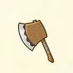
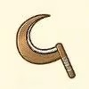
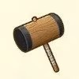

Herramientas

Hay un total de 9 herramientas que puedes usar en el juego de las cuales 5 son para la granja y las otras 4 son para otros usos, a diferencia de otros juego no iniciaras con las herramientas en su totalidad y lo conseguiras vajo ciertas circunstancia.
| Nombre | Obtencion | Uso | Herramienta |
|---|---|---|---|
| Hacha | Dado el primer día | Cortar árboles para obtener madera. |  |
| Hoz | Dado el primer día | Cosechar hierba |  |
| Martillo | Dado el primer día | Puede romper rocas |  |
| Mithril | 5.000 G | 100% |  |
Estas herramientas iniciales baratas (nivel 1) se pueden mejorar llevándolas a la forja para que puedan ser mejoradas pero para eso nesesitaras madera y lingotes como materiales para mejorarla.
- Necesitará utilizar la herramienta para adquirir experiencia en ella. Puede ver los niveles de sus herramientas presionando el botón X para abrir el menú principal, navegando al menú de herramientas y luego presionando el botón Más para abrir la ventana de nivel. Obtendrá 100 puntos por usar la herramienta para el propósito previsto y 50 puntos simplemente por balancear la herramienta. Puedes ganar experiencia con la azada y el martillo mientras los usas durante la exploración de las minas.
- También necesitarás mineral en bruto para que Saibara lo utilice para remodelar la herramienta. Puedes obtener mineral de la mina de la cascada que esta junto a las aguas termales en el bosque. El mineral está escondido en las rocas que aplastarás con un martillo mientras exploras las profundidades de la mina. Cuanto más profundamente explores la mina, más raros serán los minerales que podrás encontrar.
| Nombre | Precio | Experiencia minima | Mineral |
|---|---|---|---|
| Cobre | 1.000 G | 10% |  |
| Plata | 2.000 G | 28% |  |
| Oro | 3.000 G | 55% |  |
| Mithril | 5.000 G | 100% | |
Puedes saltarte los niveles de remodelación de herramientas si tienes suficiente experiencia. Por ejemplo, si tenías una azada de nivel 2 (cobre) con un 65% de experiencia, entonces puedes saltarte el nivel 3 (plata) e ir directamente al nivel 4 (oro).
Lleva el mineral, la herramienta y una tarifa a Saibara y selecciona la mejora de herramienta de su inventario. La puerta de la tienda de Saibara estará cerrada mientras él esté trabajando en tu encargo. Cada nivel tomará un día de trabajo. Saltarse los niveles de actualización agregará un día adicional de trabajo por nivel.
¡No olvide VOLVER a su tienda para recoger tu herramienta mejorada durante su horario laboral! No entrega herramientas remodeladas cuando no está trabajando, los jueves o en días festivos importantes cuando hay algún evento en la Plaza Rosa.
Herramientas malditas

Durante la temporada de invierno, las herramientas malditas aparecerán en la mina del lago, a la que se puede acceder caminando sobre el agua congelada del lago. Cada una de tus herramientas tiene una versión maldita de sí misma, que se puede encontrar cavando en el suelo en niveles específicos de la mina del lago:
- Nivel 29 = Caña de pescar maldita.
- Nivel 39 = Azada Maldita.
- Nivel 49 = Hacha Maldita.
- Nivel 59 = Martillo Maldito.
- Nivel 69 = Regadera Maldita.
- Nivel 79 = Hoz Maldita.
Su conjunto original de las seis herramientas debe estar en el nivel de Mithril para que las herramientas malditas aparezcan en la mina del lago. También necesitarás espacios vacíos en la sección de herramientas de tu mochila para encontrar las herramientas escondidas en la tierra.
Las herramientas malditas no borran ni reemplazan las herramientas de Mithril existentes. Puedes poner las herramientas malditas de nivel 6 en tu caja de herramientas y aún tener acceso a tus herramientas de nivel 5.
¡Las herramientas malditas no se pueden eliminar por sí solas una vez equipadas! estaras maldecido y se unirán a ti impidiendo que puedas cambiar de herramienta. Para quitar una herramienta maldita, tendrás que ir a la Iglesia y pedirle a Carter que bendiga la herramienta para desequiparla. El sacerdote dará las bendiciones cuando esté en su confesionario los lunes y miércoles entre las 13:00 y las 16:00 horas. Carter también estará en su stand de 1 a 4 cuando afuera llueva o nieva. Pedirle a Carter que bendiga una herramienta maldita costará 1000 G. La herramienta maldita se moverá de la ranura de herramientas equipada y se colocará en su mochila.
Herramientas benditas
A la herramienta maldita se le pueden eliminar permanentemente sus maldiciones desagradables, lo que la actualizará las herramientas a sus formas benditas. Una herramienta maldita se convertirá en bendita si completas las siguientes acciones:
- Pagarle a Carter para que bendiga una herramienta 5 veces y eliminará la maldición, pero solo de la azada maldita y la regadera maldita.
- Mantener la herramienta maldita como herramienta equipada durante 5 días seguidos y eliminará la maldición, pero solo de la hoz maldita y el martillo maldito.
- Usar la herramienta maldita 50 veces y eso eliminará la maldición, pero solo del Hacha Maldita y la Caña de Pescar Maldita.
Usar herramientas de nivel maldito consumirá mucha resistencia . Una vez que se haya eliminado la maldición, ¡la herramienta mejorada de nivel 6 será mucho más eficiente!.
Herramientas Miticas
La última actualización de herramienta disponible son las herramientas de nivel 7. Esto requerirá que tengas las seis herramientas de nivel 6 en sus formas bendecidas. Una vez que eso ocurra, el mineral mítico aparecerá en piedras minerales en la mina de la cascada en los pisos 60, 102, 123, 152, 155, 171, 190, 202, 222 y en los pisos 231 al 255. Al igual que con las herramientas malditas.
El mineral legendario se genera cuando ingresas al piso en el que se encuentran. Usa el truco de guardar/recargar para asegurarte de agarrar algunos minerales míticos cada vez que aterrices en su piso. Obtener la Joya de la Diosa del piso puede ayudar con la aparicion de el mineral legendario, ya que es una cosa menos que tienes que descubrir.
Después de encontrar un mineral legendario, llévaselo a Saibara y contrátalo para remodelar tu herramienta al nivel 7; Saibara no utilizará tus herramientas benditas para esta remodelación en cambio usara tus herramientas originales que estan en el nivel Mithril. Saibara cobrará 50.000 G por la remodelación y tardará 7 días en completar la actualización.
| Nombre | Precio | Experiencia minima | Mineral |
|---|---|---|---|
| Mineral legendario | 50.000 G | 100% |  |
Joyas y tesoros especiales
A lo largo del juego es posible que te encuentres con joyas especiales de la Diosa, Kappa y de la Verdad. Estas joyas no se pueden enviar ni regalar a los aldeanos. Puedes llevarlos en la sección de artículos de tu mochila o guardarlos dentro del gabinete de artículos de la casa de la granja. Las joyas están escondidas alrededor de la ciudad mineral y dentro de las rocas que se encuentran en pisos específicos de las minas del lago y cascada.
Hay 9 de cada tipo de joya. Una vez que recojas las 9, las joyas se pueden cambiar por una gema que puede usarse como herramienta para ayudarte con tu resistencia y fatiga. Para las joyas de la Diosa y las de Kappa, el intercambio se realizará automáticamente cuando recojas la novena joya. Para las joyas de la Verdad, el alcalde Thomas las cambiará por la Gema de la Verdad. No es necesario que todas las joyas estén en la sección de artículos de tu mochila para que se realice el intercambio, pero SÍ necesitas tener un espacio vacío en la sección de herramientas para recibir el tesoro fina.
Joyas de la Diosa

Las 9 Joyas de la Diosa se pueden encontrar escondidas en las rocas en ciertos pisos de la mina de la cascada en los pisos 60, 102, 123, 152, 155, 171, 190, 202 y 222.
La posibilidad de que aparezca una Joya de la Diosa en el suelo se activará en el momento en que entres al suelo. No se garantiza al 100% que la joya aparezca en su suelo; existe la posibilidad de que la joya no salga cuando rompas las rocas en el piso designado para la joya.
Después de recolectar las 9 Joyas de la Diosa, aparecerá la Diosa de la Cosecha para felicitarte. Ella tomará las 9 Joyas de la Diosa y te dará el Tesoro de la Diosa a cambio. El Tesoro de la Diosa es una piedra de color blanco que recuperará tu resistencia (íconos de bayas de energía) en 1 punto cada 1 minuto en el juego mientras la tengas equipada como herramienta activa y estés afuera (es decir, el Tesoro no funciona en interiores). porque el tiempo sólo pasa cuando el agricultor está al aire libre.
Joyas del Kappa

Las 9 joyas Kappa se pueden encontrar en la mina del lago y esta mina está ubicada en una isla en medio del Lago. Puedes llegar a la mina durante la temporada de invierno cuando el agua del lago se congela y puedes cruzar el lago caminando hasta la isla. Si recoges la piedra de viaje del piso 255 de la mina de la cascada una vez que llegues al año 3 del juego, podrás llegar a la mina del lago durante todo el año teletransportándote directamente a la isla.
Las 9 Joyas del Kappa se pueden encontrar escondidas en las rocas en ciertos pisos 0 (entrada de la mina), 40, 60, 80, 120, 140, 160, 180 y 255.
Las Joyas Kappa son menos escasas que las Joyas de la Diosa en la mayoría de los pisos de la mina. La joya que se encuentra en las rocas del piso 255 de la mina del lago resalta con bastante facilidad en comparación con los otros pisos. Puedes usar la misma técnica de guardar/recargar que cuando buscas las Joyas de la Diosa en la Mina de la cascada.
Después de recolectar las 9 joyas Kappa, esta vez aparecerá Kappa para felicitarte. Él tomará las 9 joyas y te dará el Tesoro Kappa a cambio. El Tesoro Kappa de color verde restaurará tu fatiga (ícono de cara) en 1 punto cada 1 minuto en el juego, siempre que esté equipado como herramienta activa y estés afuera.
Joyas y tesoros de la verdad

Las 9 Joyas de la Verdad están escondidas alrededor de Mineral Town. Ocho de las joyas aparecen al interactuar con objetos, tiendas, etc.
- Presiona el botón A cuando estés parado frente al abrevadero dentro del establo de caballos.
- Presiona el botón A cuando estés parado al lado del poste de luz de la calle a lo largo del camino norte/sur entre la iglesia y Rose Plaza.
- Presiona el botón A cuando estés frente a la estatua de la Diosa en el patio de la iglesia.
- Sube al segundo piso de la biblioteca y presiona el botón A cuando estés parado frente a la estantería del extremo derecho en el medio de la habitación.
- Intercambia 1000 medallas en el puesto de premios de Thomas durante la carrera de caballos de primavera u otoño.
- Cómpralo en la tienda de Huang por 50.000 G.
- Reciba como premio por ganar el programa de preguntas de matemáticas de Año Nuevo de Harvest Goddess que se transmite en Town Villa TV desde la primavera 1 hasta la primavera.
- La casa adicional se puede comprar en Gotts por 10 millones de G, 999 de madera y 999 de material de piedra.
- Presione el botón A cuando esté frente al calendario que se encuentra dentro de Mountain Cottage, que recibirá como regalo de su cónyuge en su 50 aniversario de bodas.
Después de recolectar las primeras 8 Joyas de la Verdad, vaya a la casa del alcalde Thomas de lunes a viernes y presione el botón A cuando esté frente al refrigerador. Aparecerá la última Joya de la Verdad y Thomas la cambiará por el Tesoro de la Verdad.
Cuando se selecciona como herramienta activa, Truth Treasure mostrará los valores de puntos actuales de resistencia y fatiga en la pantalla. Tus puntos de fatiga actuales aparecen debajo del ícono de la cara, pero esta versión actualizada del juego GBA ya muestra tus puntos de resistencia, por lo que este elemento no es tan beneficioso como lo era originalmente.
En el juego de GBA, una de las Joyas de la Verdad se podía encontrar en el techo de la casa del perro. Dado que en la nueva versión de GBA las mascotas viven dentro de la casa de la granja, la ubicación de la joya se cambió a la estatua de la Diosa al lado de la iglesia.